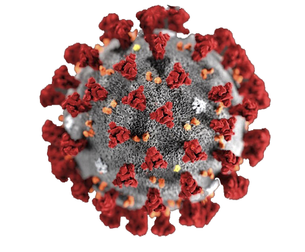
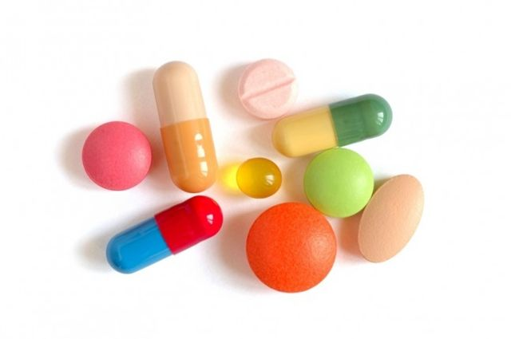

¿Qué es un coronavirus?
Es un virus perteneciente a una extensa familia del mismo nombre, que puede causar enfermedades tanto en animales como en humanos. En estos últimos, se sabe que varios coronavirus causan infecciones respiratorias que pueden ir desde el resfriado común hasta enfermedades más graves como el síndrome respiratiorio de Oriente Medio (MERS) y el síndorme respiratorio severo agudo (SRAS).
Sintomatología
Los Sintomas más habituales que presentan las personas infectadas con Covid-19 son fiebre, tos seca y cansancio.
Otros síntomas menos frecuentes que afectan a algunos pacientes son:
- Dolores y molestias.
- Congestión nasal.
- Dolor de cabeza.
- Conjuntivitis.
- Dolor de garganta.
- Diarrea.
- Pérdida del sentido del gusto o el olfato.
- Erupciones cutáneas.
- Cambio de color en los dedos de manos o pies.
Estos síntomas sueles ser leves y comienzan gradualmente. Algunas personas infectadas solo presentasn síntomas levísimos. Alrededor del 80% de las personas infectadas se recuperan de la enfermedad sin necesidad de tratamiento hospitalario. Alrededor de 1 de cada 5 personas que contraen la enfermedad acaba presentando un cuadro grave y experimenta dificultades para respirar. Las personas mayores y las que padecen afecciones médicas previas como hipertensión arterial, problemas cardiacos o pulmonares, diabetes o cáncer tienen más probabilidades de presentar cuadros graves. Sin embargo, cualquier persona puede contraer el covid-19 y caer gravemente enferma. Las personas de cualquier edad que tengan fiebre o tos y además respiren con dificultad, sientan dolor u opresión en el pecho o tengan dificultades para hablar o moverse deben solicitar atención médica inmediatamente. Si es posible, se recomienda llamar primero al profesional sanitario o centro médico para que estos remitan al paciente al establecimiento sanitario adecuado

Tratamiento
Aunque algunas soluciones de la medicina occidental o tradicional o remedios caseros pueden resultar reconfortantes y aliviar los síntomas leves de la COVID-19, hasta ahora ningún medicamento ha demostrado prevenir o curar esta enfermedad. La OMS no recomienda automedicarse con ningún fármaco, incluidos los antibióticos, para prevenir o curar la COVID-19. Sin embargo, hay varios ensayos clínicos en marcha, tanto de medicamentos occidentales como tradicionales. La OMS está coordinando la labor de desarrollo de vacunas y medicamentos para prevenir y tratar la COVID-19 y seguirá proporcionando información actualizada a medida que se disponga de los resultados de las investigaciones.
Las formas más eficaces de protegerse a uno mismo y a los demás frente a la COVID 19 son:
- Lavarse muy bien las manos y con frecuencia.
- Evitar tocarse los ojos, la boca y la nariz.
- Cubrirse la boca con el codo flexionado o con un pañuelo. Si se utiliza un pañuelo, hay que desecharlo inmediatamente después de su uso y lavarse las manos.
- Mantener una distancia de al menos un metro con las demás personas.